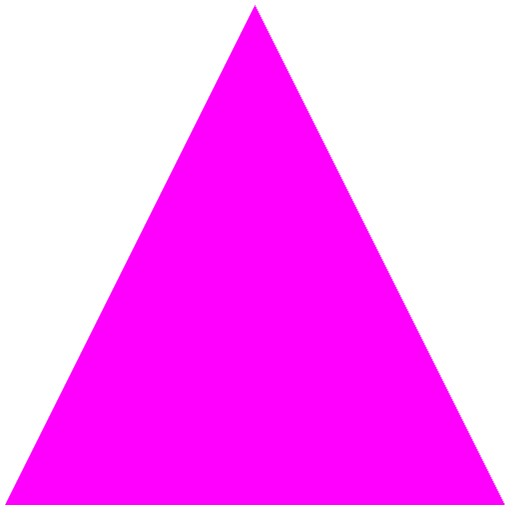
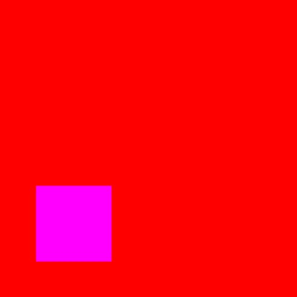
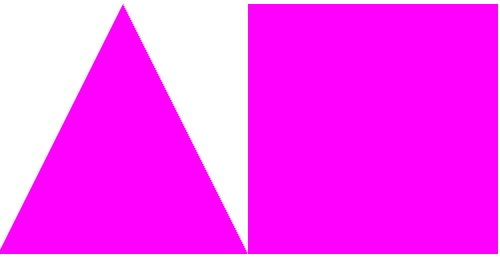
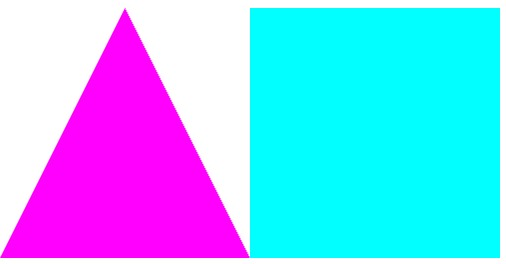
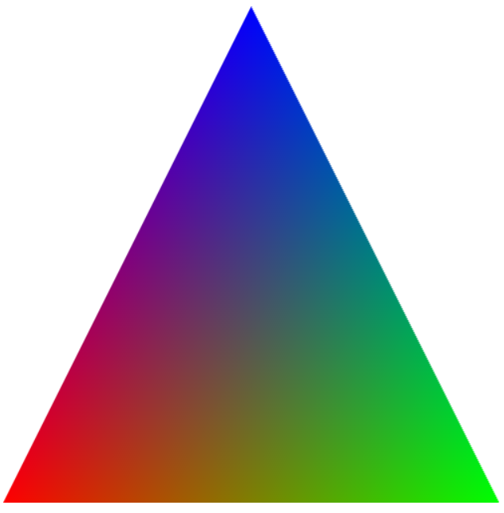

Tuyi
.top
    
这里啥也没有
Tuyi.top
2024/9/16
显示三角形--------------------- <html> <head> <meta http-equiv="Content-Type" content="text/html;charset=utf-8"> <title>Chapter 1. First WebGL Demo</title> <!-- 顶点着色器和片元着色器代码 --> <script id="vertex-shader" type="x-shader/x-vertex"> #version 300 es in vec4 vPosition; void main() { gl_Position = vPosition; } </script> <script id="fragment-shader" type="x-shader/x-fragment"> #version 300 es precision mediump float; out vec4 fColor; void main() { fColor = vec4( 1.0, 0, 1.0, 1.0 ); } </script> <!-- 一组相关的JS库 --> <script type="text/javascript" src="./common/webgl-utils.js"></script> <script type="text/javascript" src="./common/initShaders.js"></script> <script type="text/javascript" src="./common/glMatrix-0.9.5.min.js"></script> <!-- 绘制三角形的JS代码 --> <script type="text/javascript" src="./js/triangle.js"></script> </head> <body> <canvas id="triangle-canvas" style="border:none;" width="500" height="500"></canvas> </body> </html> 显示四边形--------------------- <html> <head> <meta http-equiv="Content-Type" content="text/html;charset=utf-8"> <title>Chapter 1. First WebGL Demo</title> <!-- 顶点着色器和片元着色器代码 --> <script id="vertex-shader" type="x-shader/x-vertex"> #version 300 es in vec4 vPosition; void main(){ gl_Position = vPosition; } </script> <script id="fragment-shader" type="x-shader/x-fragment"> #version 300 es precision mediump float; out vec4 fColor;// out mediump vec4 fColor; void main(){ fColor = vec4( 1.0, 0, 1.0, 1.0 ); } </script> <!-- 一组相关的JS库 --> <script type="text/javascript" src="./common/webgl-utils.js"></script> <script type="text/javascript" src="./common/initShaders.js"></script> <script type="text/javascript" src="./common/glMatrix-0.9.5.min.js"></script> <!-- 绘制三角形的JS代码 --> <script type="text/javascript" src="./js/square.js"></script> </head> <body> <canvas id="square-canvas" style="border:none;" width="500" height="500"></canvas> </body> </html> 显示一个三角形一个四边形--------------------- <html> <head> <meta http-equiv="Content-Type" content="text/html;charset=utf-8"> <title>Chapter 1. First WebGL Demo</title> <!-- 顶点着色器和片元着色器代码 --> <script id="vertex-shader" type="x-shader/x-vertex"> #version 300 es in vec4 vPosition; void main(){ gl_Position = vPosition; } </script> <script id="fragment-shader" type="x-shader/x-fragment"> #version 300 es precision mediump float; out vec4 fColor;// out mediump vec4 fColor; void main(){ fColor = vec4( 1.0, 0, 1.0, 1.0 ); } </script> <!-- 一组相关的JS库 --> <script type="text/javascript" src="./common/webgl-utils.js"></script> <script type="text/javascript" src="./common/initShaders.js"></script> <script type="text/javascript" src="./common/glMatrix-0.9.5.min.js"></script> <!-- 绘制三角形的JS代码 --> <script type="text/javascript" src="./js/trisquare.js"></script> </head> <body> <canvas id="trisquare-canvas" style="border:none;" width="500" height="500"></canvas> </body> </html> 显示两个不同颜色的三角形和四边形--------------------- <html> <head> <meta http-equiv="Content-Type" content="text/html;charset=utf-8"> <title>Chapter 1. First WebGL Demo</title> <!-- 顶点着色器和片元着色器代码 --> <script id="vertex-shader" type="x-shader/x-vertex"> #version 300 es in vec4 vPosition; void main(){ gl_Position = vPosition; } </script> <script id="fragment1-shader" type="x-shader/x-fragment"> #version 300 es precision mediump float; out vec4 fColor; void main(){ fColor = vec4(1.0, 0.0, 1.0, 1.0); } </script> <script id="fragment2-shader" type="x-shader/x-fragment"> #version 300 es precision mediump float; out vec4 fColor; void main(){ fColor = vec4( 0, 1.0, 1.0, 1.0 ); } </script> <!-- 一组相关的JS库 --> <script type="text/javascript" src="./common/webgl-utils.js"></script> <script type="text/javascript" src="./common/initShaders.js"></script> <script type="text/javascript" src="./common/glMatrix-0.9.5.min.js"></script> <!-- 绘制三角形的JS代码 --> <script type="text/javascript" src="./js/trisquarenc.js"></script> </head> <body> <canvas id="trisquare-canvas" style="border:none;" width="500" height="500"></canvas> </body> </html> 显示渐变色的三角形--------------------- <html> <head> <meta http-equiv="Content-Type" content="text/html;charset=utf-8"> <title>Chatper 1. First WebGL Demo</title> <!-- 顶点着色器和片元着色器代码 --> <script id="vertex-shader" type="x-shader/x-vertex"> #version 300 es in vec4 aPosition; in vec4 aColor; out vec4 vColor; void main(){ gl_Position = aPosition; vColor = aColor; } </script> <script id="fragment-shader" type="x-shader/x-fragment"> #version 300 es precision mediump float; in vec4 vColor; out vec4 fColor; void main(){ fColor = vColor; } </script> <!-- 一组相关的JS库 --> <script type="text/javascript" src="./common/webgl-utils.js"></script> <script type="text/javascript" src="./common/initShaders.js"></script> <script type="text/javascript" src="./common/glMatrix-0.9.5.min.js"></script> <!-- 绘制三角形的JS代码 --> <script type="text/javascript" src="./js/trianglecolor.js"></script> </head> <body> <canvas id="triangle-canvas" style="border:none;" width="500" height="500"></canvas> </body> </html>